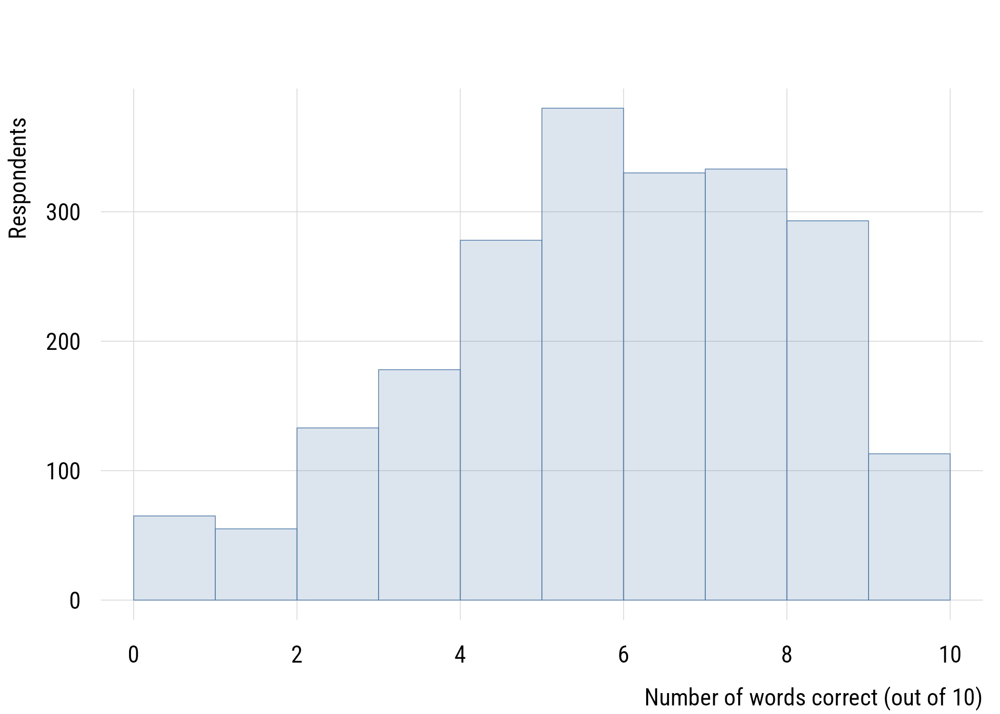
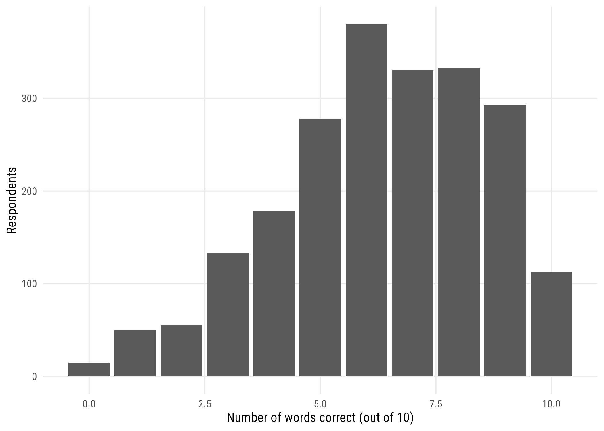

install.packages(c(
"pacman", # loads other packages without fuss
"tidyverse", # data wrangling and ggplot2
"here", # sane file paths
"haven", # survey data with variable labels
"broom", # tidy model output
"janitor", # nicer cross-tabs than base R's table()
"modelsummary", # regression tables
"marginaleffects", # predictions and comparisons from models
"ggeffects", # predicted values from models
"tinyplot", # the other plotting system we use
"ragg", # a better graphics device, used for every figure here
"nlme", # one model in the group-comparison chapter needs this
"lmtest", # robust standard errors
"sandwich" # robust standard errors
))Setting up
This chapter is housekeeping. You install some software, you build three data files, and then you are done with it. Nothing here is on the exam, and you will not need to come back except to look something up.
What you need
Install these pieces of software, in this order:
- R — the language everything here is written in. Download it from cran.r-project.org and install it the way you install anything else.
- RStudio Desktop — the environment you will actually work in. Get the free version from posit.co.
R is the engine; RStudio is the dashboard. You need both, and it is easier if you install R first, because RStudio goes looking for it.
Installing packages
R by itself is fairly spartan. Nearly everything useful lives in packages that you install once and then load whenever you need them.
Run this in the RStudio console. It will take a few minutes and print a great deal of text, most of which you can ignore.
The General Social Survey lives in its own package, which is not on CRAN. Install Kieran Healy’s gssr package using the code below. You only have to do this once.
# Install 'gssr' from 'ropensci' universe
install.packages('gssr', repos =
c('https://kjhealy.r-universe.dev', 'https://cloud.r-project.org'))
# Also recommended: install 'gssrdoc' as well
install.packages('gssrdoc', repos =
c('https://kjhealy.r-universe.dev', 'https://cloud.r-project.org'))A place to put things
Make a folder for this course somewhere on your machine. Inside it, make a subfolder called data. In RStudio, choose File → New Project → Existing Directory and point it at the course folder.
That project file marks the top of your project, which lets the here package build file paths that work on anyone’s computer:
here::here("data", "gss2024.rds")On your machine that resolves to something like C:/Users/you/soc522/data/gss2024.rds; on mine it resolves to something else entirely. The code stays the same. This is why you will never see a line like setwd("C:/Users/steve/Desktop/...") in this book.1
1 Code with a hard-coded path on someone’s desktop is code that runs on exactly one computer, until that person reorganizes their desktop.
Building the data
Most of the examples in this book use the General Social Survey, which has been asking Americans about their lives, beliefs, and circumstances since 1972. The General Social Survey is one of sociology’s greatest assets. I have often called it the “Hubble telescope” of sociology.
We will build three files from it. Run this once; it takes a minute or two and then you won’t have to do it again.
Looking at the documentation
The package ships the codebook as well as the data.
library(gssr)
library(dplyr)
data(gss_doc)
glimpse(gss_doc)You can look up individual variables. If you don’t want to fool around with unnest() you can use the convenience functions Kieran built into the package:
gss_get_marginals(c("sex", "race"))Either way, this is like looking at the “codebook.” For more flexibility, we can use the actual data.
The full series
The gssr package ships with the whole cumulative file (every year from 1972 through 2024 in the same file).
data(gss_all)
saveRDS(gss_all, here::here("data", "gss-1972-2024.rds"))That object is large: about 75,700 respondents and just under 7,000 variables. It is large because it is the union of every question the GSS has ever asked, and no single respondent was ever asked more than a fraction of them. Most of it is empty for that reason.
A single year
For most purposes that file is more than you want. Often we’ll just use the most recent subset. gss_get_yr() fetches a single year directly, keeping only the variables that year actually asked:
gss2024 <- gss_get_yr(year = 2024)
saveRDS(gss2024, here::here("data", "gss2024.rds"))For 2024, that leaves roughly 3,300 respondents and around 975 variables. That is still a lot of questions, but it is a file you can look at without your computer complaining.
The cumulative file is a giant object, so this is a good moment to remove it and free up the memory.
rm(gss_all) # remove big object
gc() # "garbage collector" to free memory(You generally won’t have to do this but it might be helpful just in case.)
A panel
The two files above are both cross-sections: a fresh sample of people each time. The GSS also ran a panel study, re-interviewing the same respondents in 2010, 2012, and 2014. That lets us watch individuals change, which no cross-section can do.
data(gss_panel10_long)
saveRDS(gss_panel10_long, here::here("data", "gss_panel10_long.rds"))One row per person per wave, about 6,100 rows in all.
Why three files
I’m having you make three files because different things are easier to demonstrate using different data.
Use gss2024.rds when the question is about people at one moment: what proportion of Americans hold some view, whether two characteristics are associated, how one group differs from another. Nearly everything in the first half of this book works this way.
Use gss-1972-2024.rds when the question involves change over time in the country: whether an attitude has shifted over fifty years, what a trend looks like plotted against time. The cumulative file is also where you go when you need more variation than a single year provides. A regression with a continuous outcome often wants more range than 3,300 respondents from one year can provide.
Use gss_panel10_long.rds when the question involves change within a person. The cumulative file can tell you that Americans watched less television in 2014 than in 2010; only the panel can tell you whether the same individuals changed. 7 Power, effect size, and intervals for parameters turns on that distinction.
Did it work?
Load the single-year file and take a look:
gss2024 <- readRDS(here::here("data", "gss2024.rds"))
dim(gss2024)[1] 3309 976Roughly 3,300 rows and several hundred columns. Each row is a respondent; each column is a variable (usually a question they were asked).
Now a first figure, as a check that the plotting side of your setup works. Here is the distribution of wordsum, a ten-word vocabulary test the GSS has fielded for decades:
plt(~ as.numeric(wordsum), data = gss2024, type = "hist",
xlab = "Number of words correct (out of 10)",
ylab = "Respondents")
ggplot(gss2024, aes(x = as.numeric(wordsum))) +
geom_bar() +
labs(x = "Number of words correct (out of 10)",
y = "Respondents")
Every figure in this book appears twice like that: once in tinyplot, once in ggplot2. They are the same figure. Use whichever you find easier to read, and switch freely; nothing later depends on which one you picked.
If both tabs produced a plot, your setup works.
One wrinkle: labelled data
If you ran this for the first time, you probably got a warning about “haven_labelled” object types. This is harmless, but it is why there is an as.numeric() wrapped around wordsum above.
The GSS arrives as labelled data. A variable like sex is stored as a number, with a label attached recording that 1 means male and 2 means female. That is useful (it means the codebook travels with the data), but it also means the column is not a plain number or a plain category, and R sometimes needs to be told which one you want.
Two things fix nearly every problem this causes:
# turn one labelled variable into an ordinary number
as.numeric(gss2024$wordsum)
# or strip the labels from a whole data frame at once
gss_plain <- haven::zap_labels(gss2024)We will come back to this in 1 Data, variables, and distributions, where it matters more. For now, if a variable behaves strangely in a plot or a calculation, labelling is the first thing to suspect.
If something went wrong
- A package will not install. Read the last few lines of the output, not the first. The real error is usually at the bottom.
gssris not found. It is not on CRAN. You need therepos =argument shown above.here::here()points somewhere strange. You are probably not in the project. Look at the top-right corner of RStudio; it should name your course project.- The fonts look different from the book. Harmless. This book is set in Roboto Condensed, which you may not have installed; the code checks whether it’s there and quietly falls back to your system default if it isn’t. If you want the same look, the font is free from Google Fonts.
If all this fails, there’s no shame in checking with an LLM. But at least try to figure out things yourself for a little bit. In any case, setup problems are worth solving early in a course rather than working around for a semester.